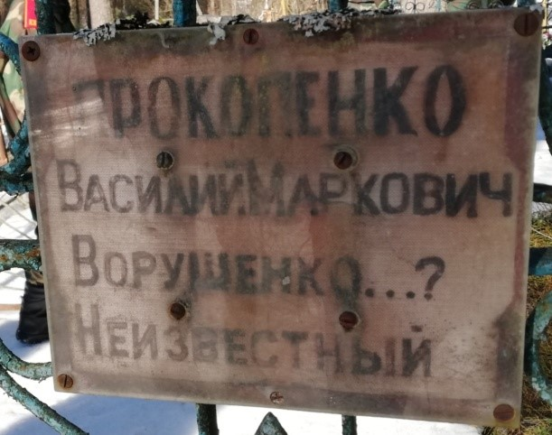
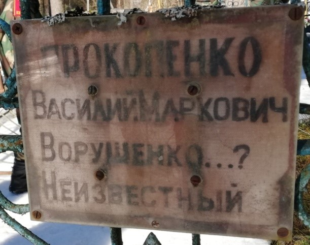
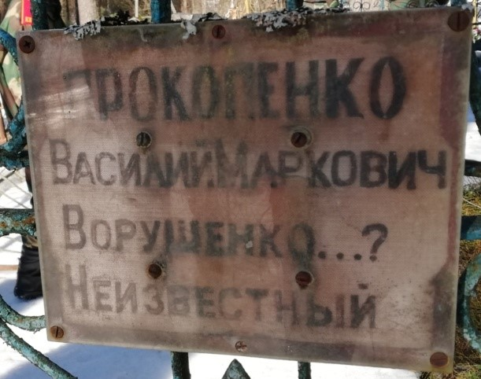

Информация № 21: Могила партизана Бухаева А.
1. Месца і дата пахавання: Рэспубліка Беларусь, Віцебская вобл., Віцебскі раён, в. Грабяніца Мазалаўскага с/с
2. Тып пахавання: брацкая магіла
3. Памеры пахавання: Шырыня – 2 м, даўжыня – 3 м
4. Кароткае апісанне пахавання: металічны крыж
5. Колькасць пахаваных: 3
6. Персанальныя звесткі: Пракапенка В.М., Варушэнка, невядомы
7. Дадатковая інфармацыя: на грамадзянскіх могілках в. Грабяніца, непадалёк ад воінскага пахавання № 4428. На металічным крыжы шыльда з тэкстам: “Прокопенко Василий Маркович, Ворушенко…? Неизвестный”. У раённай кнізе Памяць на с. 574 указаны Пракапенка Васіль Маркавіч як ураджэнецм в. Бараўляны, 1901 г.н. забіты 19.03. 1943 г. На с. 578 указаны Варушэнка Міхаіл Андрэевіч, заніуў 4.04. 1943 г. Шаўцова В.Я. 1930 г.н. паказала, што жыў на торфзаводзе (Кабыляку).

Информация № 22: Могила партизанки Ореховой Н.И.
1. Месца і дата пахавання: Рэспубліка Беларусь, Віцебская вобл., Віцебскі раён, в. Грабяніца Мазалаўскага с/с
2. Тып пахавання: індывідуальная магіла
3. Памеры пахавання: Шырыня – 2 м, даўжыня – 3 м
4. Кароткае апісанне пахавання: металічная агароджа, каменны помнік, фотаздымак
5. Колькасць пахаваных: 1
6. Персанальныя звесткі: Арэхава Ніна Ільінішна
7. Дадатковая інфармацыя: На помніку інфармацыя: Орехова Нина Ильинишна 20.V. 1921–19.V.1943. последний подарок от сестер и брата. Жахарка в. Грабяніца Шаўцова В.Я. 1930 г.н. указала, што Арэхава была партызанскай атрада М.Ф. Біруліна

Информация № 23: Могила партизанки Святченко А.П.
1. Месца і дата пахавання: Рэспубліка Беларусь, Віцебская вобл., Віцебскі раён, в. Грабяніца Мазалаўскага с/с
2. Тып пахавання: індывідуальная магіла
3. Памеры пахавання: Шырыня – 2 м, даўжыня – 3 м
4. Кароткае апісанне пахавання: металічная агароджа, каменны помнік, фотаздымак
5. Колькасць пахаваных: 1
6. Персанальныя звесткі: Святчанка Анастасія Паўлаўна
7. Дадатковая інфармацыя: На помніку інфармацыя: “Святченко Анастасия Павловна 1898–1944. Любимой матери от детей”. Жыхарка в. Грабяніца Шаўцова В.Я. 1930 г.н. указала, што Арэхава была партызанскай брыгады М.Ф. Біруліна. Хадзілі ў Альгова на разведку, сабраўшы звесткі дастаўлялі назад у брыгаду.
Информация № 24: Могила Василенко И.Е.
1. Месца і дата пахавання: Рэспубліка Беларусь, Віцебская вобл., Віцебскі раён, в. Грабяніца Мазалаўскага с/с
2. Тып пахавання: індывідуальная магіла
3. Памеры пахавання: Шырыня – 2 м, даўжыня – 3 м
4. Кароткае апісанне пахавання: металічная агароджа, каменны помнік, фотаздымак
5. Колькасць пахаваных: 1
6. Персанальныя звесткі: Васіленка Іван Ефграфавіч
7. Дадатковая інфармацыя: На помніку інфармацыя: “Василенко Иван Ефграфович 15.ІІІ. 1909–23.ІІ. 1943”, маецца фота. Па звестках Шаўцовай В.Я. прапаў без весці. Ёсць у раённай кнізе “Памяць”.